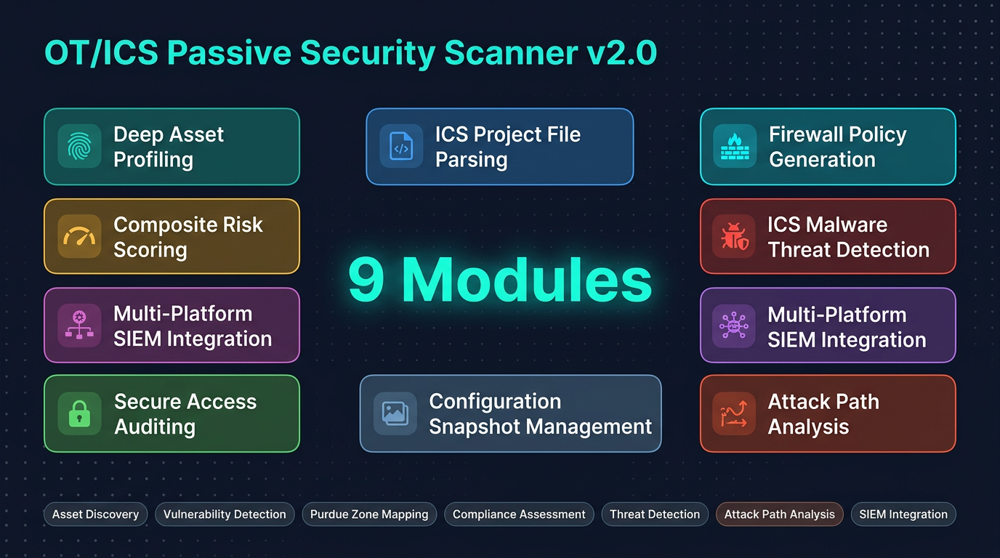
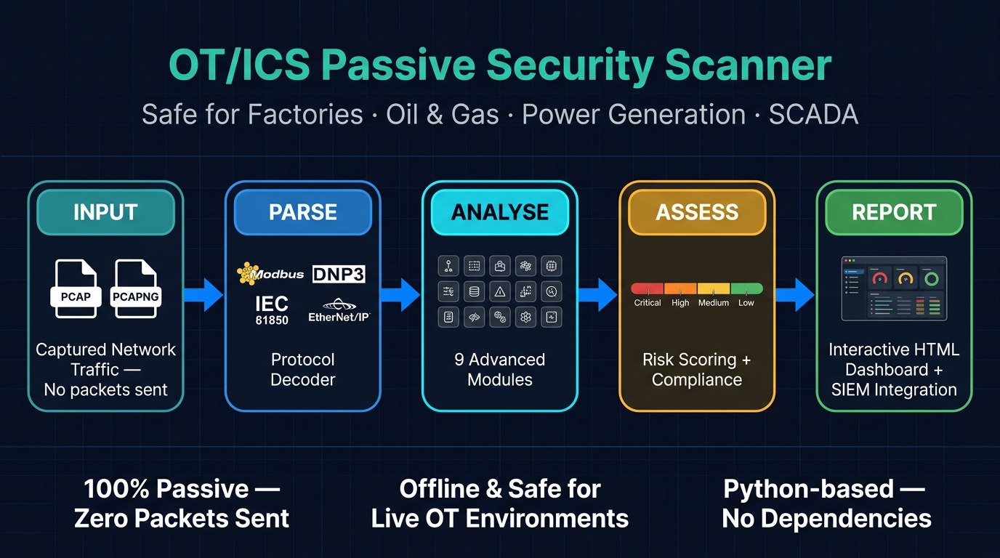
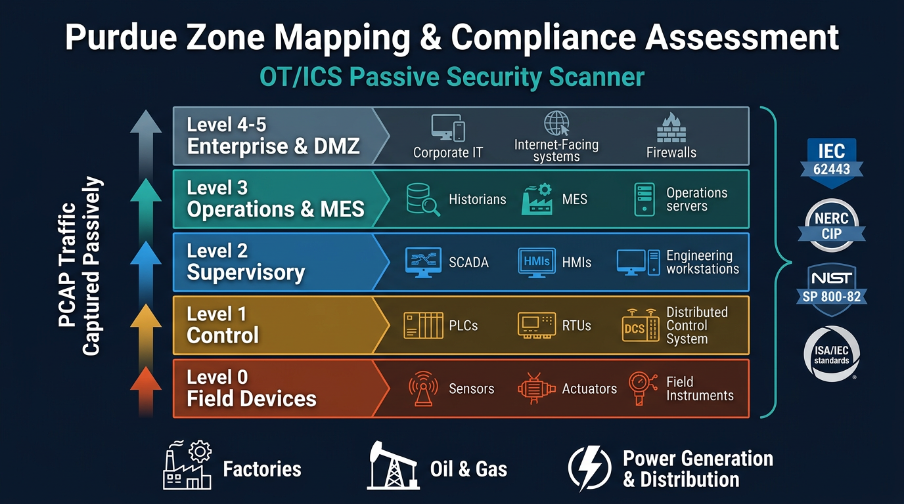

01Overview
Active network scanning is genuinely dangerous in operational technology. A single unexpected probe can crash a PLC, trip a protection relay, or break a single-master SCADA session and disrupt a live control loop. This project takes the opposite approach: it is a set of purely passive OT/ICS security scanners that never transmit a single packet. Everything is derived offline from captured traffic (PCAP / PCAPNG) collected via TAPs, SPAN ports, or existing IDS/NDR sensors, making it safe to run against production plants, substations, and refineries.
The flagship is the Unified OT Scanner (v2.0, ~22,700 lines) that merges and extends two earlier single-purpose tools into one pipeline. From a capture alone it discovers industrial assets, fingerprints vendors and firmware, decodes 20 industrial protocols, maps the network to the Purdue model, matches known ICS CVEs, detects ICS malware behavior, scores composite risk, and reconstructs multi-hop attack paths from IT entry points to safety-critical devices. Two legacy scanners (PLC-focused and RTU/IED-focused) remain in the repo for reference.
The tool is built for OT/ICS security engineers, SOC analysts covering industrial networks, and asset owners in energy, manufacturing, utilities, and building automation who cannot risk active scanning. Its output is broad and operational: interactive HTML and GraphML topology, SIEM-ready CEF/LEEF/STIX/ECS/Splunk feeds, ServiceNow CMDB import, auto-generated Palo Alto / Fortinet / Cisco firewall policy, and NERC CIP / IEC 62443 / NIST 800-82 compliance reports.
It is notably self-contained and honest about its footprint: stdlib-only Python (only scapy/dpkt/colorama), graceful degradation when optional engines are missing, 76 offline unit tests, and a GitHub Actions matrix across Python 3.8/3.10/3.12. A CISA KEV auto-refresh importer keeps the 'actively exploited' and EPSS data current from authoritative sources instead of hand curation.
02Key Capabilities
Purely passive, offline-safe analysis
Analyzes captured PCAP/PCAPNG traffic without ever sending a packet, so it is safe to run in live SCADA and production control environments.
20 industrial protocol decoders
Parses 17 IP-layer plus 3 Layer-2 ICS protocols including Modbus, S7comm, EtherNet/IP, DNP3, IEC-104, IEC 61850 MMS/GOOSE/SV, OPC-UA, BACnet, MQTT, PROFINET, HART-IP, GE-SRTP, Niagara Fox, and KNXnet/IP.
Vendor and firmware fingerprinting
A 7-step fingerprint pipeline plus a 144-entry OUI database identifies device vendor, model, and firmware, with deep S7comm SZL and DNP3 Group 0 attribute extraction.
29 behavioral vulnerability rules
Detects insecure OT behavior such as unauthenticated DNP3/IEC-104 control, GOOSE without IEC 62351-6, cleartext protocols, and OPC-UA/MQTT without security across four protocol check modules.
ICS CVE matching with EPSS and CISA KEV
Matches devices against 92 curated ICS CVEs enriched with EPSS scores, CISA KEV flags, and exploit maturity, classifying each hit as Now / Next / Never priority.
ICS malware threat detection
Matches observed traffic against 10 ICS malware behavioral signatures (Industroyer, TRITON, Havex, Stuxnet, Pipedream, FrostyGoop, Fuxnet, IOControl, CosmicEnergy, BlackEnergy) mapped to MITRE ATT&CK for ICS.
Purdue model topology mapping
Automatically infers /24 zones, assigns Purdue levels 0-5, detects cross-zone violations, and exports a color-coded GraphML topology for Gephi/yEd/Cytoscape.
Multi-hop attack path analysis
Uses BFS pathfinding to trace routes from IT entry points to crown-jewel OT devices, scoring each path and mapping a per-hop MITRE kill chain with ordered remediation.
Firewall policy generation
Auto-generates segmentation rules from observed flows and exports them as Palo Alto PAN-OS XML, Fortinet CLI, Cisco IOS ACL, or JSON, each mapped to IEC 62443 / NERC CIP / NIST 800-82.
Configuration snapshots and drift detection
Persists device configuration snapshots, marks last-known-good baselines, and raises drift alerts (firmware, module, program, function-code, protocol, peer, risk changes) with MITRE mapping.
Broad SIEM and CMDB integration
Exports 11 formats including CEF, LEEF, STIX 2.1, Splunk HEC, Elastic ECS, ServiceNow CMDB, and generic webhooks for downstream SOC and asset-management tooling.
Offline project-file asset discovery
Parses Siemens TIA Portal, Rockwell L5X, Schneider XEF, CSV, and JSON engineering files to enrich the inventory with ground-truth devices that bypass fingerprinting.

03Architecture
A single PCAP-analysis engine (PCAPAnalyzer in core.py) reads frames through a dual scapy/dpkt backend, dispatches them to Layer-2 and IP protocol analyzers, and builds a per-device registry and communication-flow table. A finalization pipeline then runs fingerprinting, vulnerability checks, CVE matching, topology mapping, risk scoring, threat detection, and access auditing before nine analysis engines and a reporting/export layer render the results. Every sub-engine is loaded via try/except ImportError for graceful degradation.

04Project Structure
ot_scanner/Flagship Unified OT Scanner v2.0 (~22,700 lines) - primary tool with all engines.ot_scanner/ot_scanner.pyCLI entry point and argument parsing (~750 lines).ot_scanner/scanner/core.pyPCAPAnalyzer - unified PCAP engine with dual scapy/dpkt backend and finalization pipeline.ot_scanner/scanner/protocols/22 files: 18 protocol-decoder modules (covering 20 ICS protocols) plus the IT detector, DPI behavior tracker, and base classes.ot_scanner/scanner/vuln/29 behavioral vulnerability rules across DNP3, IEC-104, IEC 61850, and general/convergence check modules.ot_scanner/scanner/cvedb/92 ICS CVEs with EPSS/KEV, the Now/Next/Never matcher, and the CISA KEV auto-refresh importer.ot_scanner/scanner/threat/ThreatDetectionEngine plus 10 ICS malware behavioral signatures with MITRE ATT&CK mapping.ot_scanner/tests/76 offline unit tests across 11 files covering all engines and the new protocol analyzers.plc_passive_scanner/Legacy v1.0 PLC device-identification scanner (7 protocols), superseded by v2.0.rtu_passive_scanner/Legacy v1.0 RTU/IED vulnerability scanner (9 protocols, 21 rules, GOOSE/MMS), superseded by v2.0..github/workflows/ci.ymlGitHub Actions CI running the test suite on Python 3.8, 3.10, and 3.12.CLAUDE.mdDetailed architecture, module map, data flow, and development conventions.05Security Controls
06Technology Stack
- Language
- Python 3.8+ (stdlib-only core)
- Packet parsing
- scapy >= 2.5.0 (primary) or dpkt >= 1.9.8 (fallback backend)
- Optional
- colorama >= 0.4.6 for colored terminal output
- Data modeling
- Python dataclasses (20+ domain types with to_dict())
- Testing
- pytest >= 7.0 - 76 offline unit tests across 11 files
- CI
- GitHub Actions matrix on Python 3.8, 3.10, 3.12
- Reporting
- Self-contained HTML (Catppuccin Mocha), GraphML, CSV, JSON
- License
- MIT
07Quick Start
$ cd ot_scanner && pip install -r requirements.txt $ python ot_scanner.py capture.pcap -o reports/ -f all $ python ot_scanner.py capture.pcap --project-dir /path/to/tia_projects/ -o reports/ $ python ot_scanner.py capture.pcap --policy policies/ $ python ot_scanner.py capture.pcap --splunk-hec events.ndjson --elastic-ecs ecs.ndjson $ python ot_scanner.py capture.pcap -v --severity high # exit code 1 on CRITICAL/HIGH for CI gating
08Compliance & Frameworks

09Integrations & Outputs
Explore OT/ICS Security Scanner
Full source, documentation, and deployment guides live on GitHub.